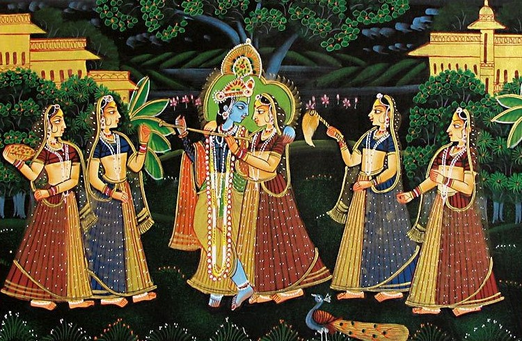

The art of Miniature painting was introduced to the land of India by the Mughals, who brought the much-revealed art form from Persia. In the sixteenth century, the Mughal ruler Humayun brought artists from Persia, who specialized in miniature painting. The succeeding Mughal Emperor, Akbar built an atelier for them to promote the rich art form. These artists, on their part, trained Indian artists who produced paintings in a new distinctive style, inspired by the royal and romantic lives of the Mughals. The particular miniature produced by Indian artists in their own style is known as Rajput or Rajasthani miniature. During this time, several schools of painting evolved, such as Mewar (Udaipur), Bundi, Kotah, Marwar (Jodhpur), Bikaner, Jaipur, and Kishangarh.
These paintings are done with utmost care and in minute details, with strong lines and bold colours set in harmonious patterns. The miniature artists use paper, ivory panels, wooden tablets, leather, marble, cloth and walls for their paintings. Indian artists employed multiple perspectives unlike their European counterparts in their paintings. The colours are made from minerals and vegetables, precious stones, as well as pure silver and gold. The preparing and mixing of colour is an elaborate process. It takes weeks, sometimes months, to get the desired results. The brushes are required to be very fine, and to get high-quality results, brushes even to this very day are made from hair of squirrels. Traditionally, the paintings are aristocratic, individualistic and strong in portraiture, where the plush court scenes and hunting expedition of royalty are depicted. Flowers and animals are also the recurrent images in the paintings.
The Kishangarh province in Rajasthan is known for its Bani Thani paintings. It is a totally different style with highly exaggerated f eatures like long necks, large, almond shaped eyes, and long fingers. This style of painting essentially depicts Radha and Krishna as divine lovers, and beautifully portrays their mystical love. Kishangarh miniature painting reached a peak in the eighteenth century, during the rule of Raja Sawant Singh, who fell in love with a slave girl, Bani Thani and commanded his artists to portray himself and her as Krishna and Radha. Other themes of Bani Thani paintings include portraits, court scenes, dancing, hunting, music parties, nauka vihar (lovers travelling in a boat), Krishna Lila, Bhagavata Purana and various other festivals like Holi, Diwali, Durga puja, and Dussehra.
Today, many artists continue to make miniature paintings on silk, ivory, cotton, and paper. However, with the passage of time, the natural colours have been replaced by poster colours. The schools of miniature have also been commercialized, and the artists mostly replicate the work produced by the old painters.
